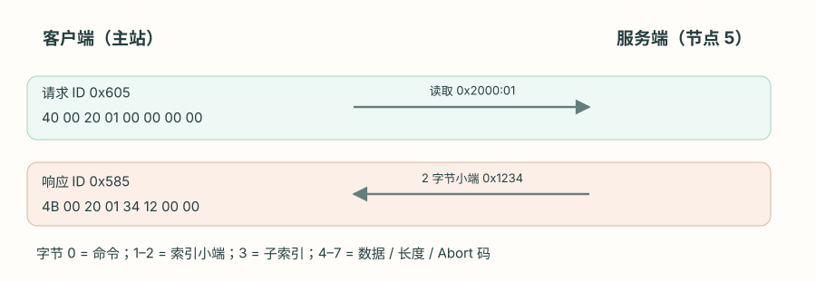
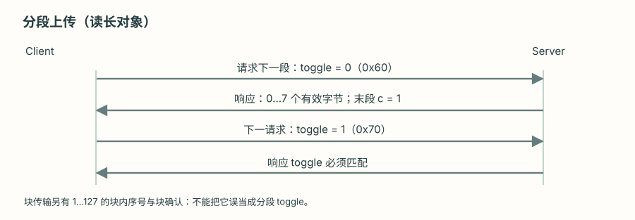

SDO：八字节里，先读懂第一个字节
一个 0x4B 为什么代表读取成功？顺着真实字节拆解加速读写、分段 toggle、块确认与超时处理。
参数明明读到了 0x4B，为什么软件却判“失败”？
假设你向节点 5 请求对象 0x2000:01。总线上返回 4B 00 20 01 34 12 00 00。有人把 0x4B 误当成报错，但这恰好是读取成功，且数据长度为两字节：数值的小端表示为 0x1234。
要读懂 SDO，先分清两种方向：Upload = 客户端读取服务端对象；Download = 客户端写入服务端对象。这里的“客户端/服务端”是协议角色，不要求它们永远等同于 NMT 主站/从站。默认预定义连接集中，节点 5 的请求 CAN-ID 为 0x605，响应 CAN-ID 为 0x585；这些 COB-ID 可以因设备通信参数而改变。

先把一条加速 SDO 彻底拆开
一个经典 CAN 的 SDO 帧可以携带 8 字节数据，若使用加速模式，Byte 4–7 才是可容纳最多 4 字节的对象值；不能把整个 CAN 负载的 8 字节都算成应用数据。
| 方向 / 命令 | 含义 | 数据区 |
|---|---|---|
读请求 0x40 | Initiate upload request | Byte 1–3 = 索引/子索引；Byte 4–7 保留 |
读响应 0x4F | 加速上传成功，1 字节 | Byte 4 有效 |
读响应 0x4B | 加速上传成功，2 字节 | Byte 4–5 有效 |
读响应 0x47 | 加速上传成功，3 字节 | Byte 4–6 有效 |
读响应 0x43 | 加速上传成功，4 字节 | Byte 4–7 有效 |
读响应 0x42 | 加速上传成功，但命令未给出对象实际长度 | 必须依对象数据类型确定有效长度 |
写请求 0x2F/2B/27/23 | 依次写入 1/2/3/4 字节 | Byte 4 起为待写值 |
写响应 0x60 | 服务端接受 Initiate download | 索引/子索引回显 |
中止 0x80 | SDO Abort | Byte 4–7 = 32 位小端 abort code |
# 读节点 5 的 0x2000:01，教学假设对象确实存在且可读
TX 0x605 [8] 40 00 20 01 00 00 00 00
RX 0x585 [8] 4B 00 20 01 34 12 00 00
# 0x4B：2 字节有效；值=0x1234（十进制 4660）
# 真正的中止示例：对象不存在（0x06020000）
RX 0x585 [8] 80 00 20 01 00 00 02 06应用层仍应核对：响应 COB-ID、索引与子索引、传输状态和期望数据类型。收到 0x60 只表示协议级写入已被接受，并不证明对象设定已经被持久化到非易失存储。CANopenNode 的 SDO 字段文档。
超过四字节怎么办：分段传输不是“连续发包”
当对象超出加速模式容量，SDO 可以采用分段传输。以读取长度已知的 10 字节 字符串为例：
- 客户端请求
0x40；服务端若返回0x41，Byte 4–7 可给出 10 字节的总长度（小端0A 00 00 00）。 - 客户端发第一段请求
0x60（toggle = 0），服务端返回 7 字节。响应控制字0x00表示“7 字节均有效，且尚未结束”。 - 客户端发第二段请求
0x70（toggle = 1），服务端返回剩余 3 字节。响应控制字0x19= toggle 为 1、4 个未使用字节、最后一段标志为 1。 - 客户端拼接 7 + 3 字节。任何 toggle 不匹配、非法命令或超时都应中止当前传输并上报原因。
t：本段 toggle（0 或 1）；n：7 字节负载中未使用的字节数；c：末段标志。分段 upload 响应和分段 download 请求采用该控制位布局。

反过来，如果是向节点写入长对象，客户端先发送 0x21 等初始化下载请求（在指示总大小时），服务端回 0x60；随后客户端携带至多 7 字节/段并等待服务端 0x20/0x30 等分段应答。切勿用简单的“每段等固定 10 ms”代替状态机和超时机制。
块传输为什么快：减少确认往返，而不是取消校验
分段 SDO 按每段一轮往返推进；Block SDO 则协商块大小，允许在一个子块中顺序发送多段，再使用 ackseq（连续成功接收的最后一个序号） 和下一块大小进行块确认。它不是“用位图任意标记哪些分段丢失”。
检查双方是否支持 Block SDO，协商每块的段数，最大段序号范围为 1–127。
每段至多 7 数据字节，Byte 0 带块内序号；末段可标识整个传输数据结束。
按 ackseq 决定继续或重传；若双方启用 CRC，则在结束阶段验证数据。
并非所有设备都实现块模式；硬件带宽、接收缓冲和固件具体配置决定最佳块大小。不要把“Block 更快”误解为在任何节点或数据规模下都必然更快。
超时、中止、权限：要区分的三类失败
| 现象 | 含义 | 动作 |
|---|---|---|
| 无响应直到本地超时 | 可能是节点离线、帧丢失、状态不允许 SDO 或处理迟缓 | 读取错误计数、检查 Heartbeat/NMT、限次重试，记录超时路径 |
0x80 … 00 00 02 06 | Abort 0x06020000：对象不存在 | 检查索引/子索引及 EDS；无意义重复请求不会修复它 |
0x80 … 02 00 01 06 | Abort 0x06010002：写只读对象 | 检查权限和操作状态，不应直接重试覆盖 |
SDO 请求/响应是一种协议级确认机制，而不是工业安全保证。重试写入应考虑幂等性、存储寿命与设备状态。超时值如 100–500 ms 只是可能的工程初值，不存在适用于所有设备的唯一推荐值；依据 EDS、传输量、最坏仲裁与设备处理时间确定。
交互实验：不用猜 0x4B、0x80 代表什么
加速上传 / Abort 解码器
假设响应索引为 0x2000:01，只改变命令字与 Byte 4–7 的内容。
把 SDO 放回网络调试流程
- 第 19 章：先确认 Boot-up 和 NMT 状态，设备在预操作即可配置 SDO。
- 本章：按 COB-ID、索引/子索引、command、数据端序逐层解码，必要时走分段或块传输。
- 第 21 章：对象准备好以后，为运行期频繁交换的数据配置 PDO，而不是周期性轮询 SDO。
资料与适用边界
本文采用经典 CANopen CiA 301 风格 SDO；示例 0x2000:01 是假定存在的厂商对象，不能据此断言任意设备支持。
- CANopenNode — SDO server：加速、分段、块传输字节格式与 Abort 代码。
- CANopenNode — SDO client：客户端状态机、超时与协议选项。
- CiA — Service Data Objects：协议定位与传输类型概述。